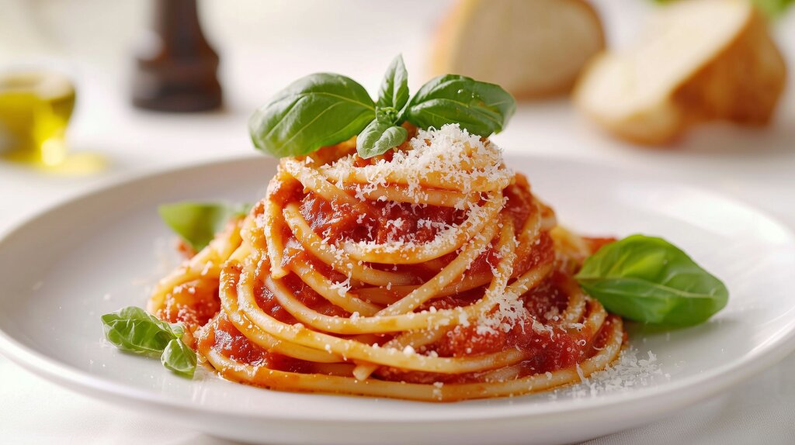

Home
Spaghetti al pomodoro

Description
Surely one of the most popular Italian dishes.
It's won't take too long to prepare,
but this recipe is easy to make and hard to master.
What matters the most is the quality of tomatoes
and the right consistency of the pasta, expected to be "al dente".
Ingredients
- 80gr of Spaghetti per person
- Onion (half of it) or Garlic (2 cloves)
- Tomato sauce
- Salt
- Grana Padano or Parmesan cheese (once served)
Steps
- Put the Spaghetti in the boiling and previously salted water.
- In the meantime simmer the onion or garlic for about 5 to 10 minutes.
- Once the onion is blonde, pour the tomato sauce.
- Add enough salt.
- Serve with raw basil or by itself with Parmesan cheese sprinkled over as you like.